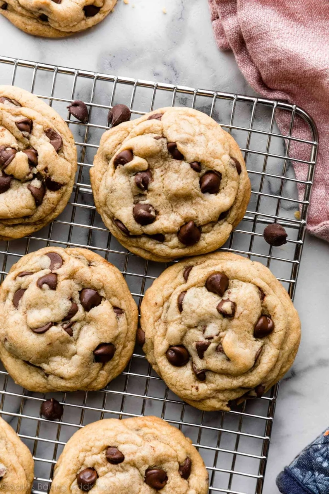

Cookies

Description
There are thousands of chocolate chip cookies recipes out there.
Everyone has their favorite and this one is mine.
Just a glance at the hundreds of reviews in the comments section tells me
that this recipe is a favorite for many others too! In fact, if you asked me which
recipe to keep in your apron pocket, my answer would be this one.
Ingredients
- 280g all purpose flour
- 1tsp baking soda
- 1.5tsp cornstarch
- 1.5tsp salt
- 170g unsalted butter, melted then cooled
- 150g brown sugar
- 100g granulated sugar
- 1 large egg + 1 egg yolk
- 2tsp vanilla extract
- 225g chocolate chunks
Instructions
- Whisk the flour, baking soda, cornstarch, and salt together in a large bowl. Set aside.
- In a medium bowl, whisk the melted butter, brown sugar, and granulated sugar together until no brown sugar lumps remain. Whisk in the egg and egg yolk. Finally, whisk in the vanilla extract. The mixture will be thin. Pour into dry ingredients and mix together with a large spoon or rubber spatula. The dough will be very soft, thick, and appear greasy. Fold in the chocolate chips. The chocolate chips may not stick to the dough because of the melted butter, but do your best to combine them.
- Cover the dough tightly and chill in the refrigerator for at least 2-3 hours or up to 3 days. I highly recommend chilling the cookie dough overnight for less spreading.
- Take the dough out of the refrigerator and allow it to slightly soften at room temperature for 10 minutes.
- heat oven to 325°F (163°C). Line large baking sheets with parchment paper or silicone baking mats. Set aside.
- Using a cookie scoop or Tablespoon measuring spoon, measure 3 scant Tablespoons (about 2 ounces, or 60g) of dough for XL cookies or 2 heaping Tablespoons (about 1.75 ounces, or 50g) of dough for medium/large cookies. Roll into a ball, making sure the shape is taller rather than wide—almost like a cylinder. This helps the cookies bake up thicker. Repeat with remaining dough. Place 8-9 balls of dough onto each cookie sheet.
- Bake the cookies for 12-13 minutes or until the edges are very lightly browned. (XL cookies can take closer to 14 minutes.) The centers will look very soft, but the cookies will continue to set as they cool. Cool on the baking sheet for 10 minutes. Meanwhile, press a few extra chocolate chips into the tops of the warm cookies. This is optional and only for looks. After 10 minutes of cooling on the baking sheets, transfer cookies to a wire rack to cool completely.